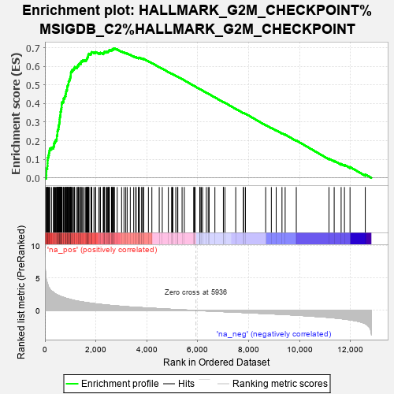
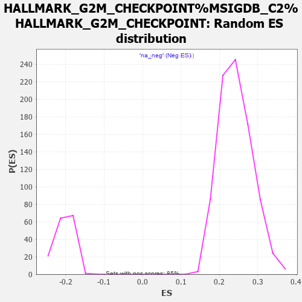

| | | Dataset | carrankstim |
| Phenotype | NoPhenotypeAvailable |
| Upregulated in class | na_pos |
| GeneSet | HALLMARK_G2M_CHECKPOINT%MSIGDB_C2%HALLMARK_G2M_CHECKPOINT |
| Enrichment Score (ES) | 0.6966718 |
| Normalized Enrichment Score (NES) | 2.8652198 |
| Nominal p-value | 0.0 |
| FDR q-value | 0.0 |
| FWER p-Value | 0.0 |
Table: GSEA Results Summary

Fig 1: Enrichment plot: HALLMARK_G2M_CHECKPOINT%MSIGDB_C2%HALLMARK_G2M_CHECKPOINT
Profile of the Running ES Score & Positions of GeneSet Members on the Rank Ordered List
| PROBE | GENE SYMBOL | GENE_TITLE | RANK IN GENE LIST | RANK METRIC SCORE | RUNNING ES | CORE ENRICHMENT | | 1 | CDC6 | | | 52 | 4.836 | 0.0145 | Yes |
| 2 | SLC7A5 | | | 59 | 4.748 | 0.0323 | Yes |
| 3 | CDC45 | | | 62 | 4.689 | 0.0501 | Yes |
| 4 | CDC25A | | | 96 | 4.147 | 0.0635 | Yes |
| 5 | MYBL2 | | | 103 | 4.080 | 0.0787 | Yes |
| 6 | GINS2 | | | 105 | 4.063 | 0.0942 | Yes |
| 7 | EXO1 | | | 111 | 4.005 | 0.1092 | Yes |
| 8 | ORC6 | | | 137 | 3.687 | 0.1214 | Yes |
| 9 | PBK | | | 158 | 3.514 | 0.1333 | Yes |
| 10 | RAD54L | | | 172 | 3.444 | 0.1456 | Yes |
| 11 | MCM2 | | | 191 | 3.310 | 0.1569 | Yes |
| 12 | ODC1 | | | 258 | 3.004 | 0.1632 | Yes |
| 13 | CDK1 | | | 332 | 2.784 | 0.1681 | Yes |
| 14 | CHEK1 | | | 357 | 2.712 | 0.1766 | Yes |
| 15 | DMD | | | 360 | 2.699 | 0.1869 | Yes |
| 16 | SLC7A1 | | | 389 | 2.611 | 0.1947 | Yes |
| 17 | UBE2C | | | 417 | 2.530 | 0.2023 | Yes |
| 18 | UBE2S | | | 457 | 2.444 | 0.2086 | Yes |
| 19 | AURKB | | | 466 | 2.424 | 0.2173 | Yes |
| 20 | KIF23 | | | 467 | 2.423 | 0.2266 | Yes |
| 21 | KPNA2 | | | 488 | 2.384 | 0.2342 | Yes |
| 22 | CCNA2 | | | 491 | 2.380 | 0.2432 | Yes |
| 23 | E2F1 | | | 492 | 2.377 | 0.2523 | Yes |
| 24 | POLQ | | | 511 | 2.351 | 0.2599 | Yes |
| 25 | NOLC1 | | | 531 | 2.307 | 0.2673 | Yes |
| 26 | CHAF1A | | | 535 | 2.300 | 0.2759 | Yes |
| 27 | STIL | | | 546 | 2.278 | 0.2838 | Yes |
| 28 | AURKA | | | 559 | 2.259 | 0.2916 | Yes |
| 29 | KIF2C | | | 567 | 2.245 | 0.2997 | Yes |
| 30 | MCM5 | | | 577 | 2.232 | 0.3075 | Yes |
| 31 | CDK4 | | | 579 | 2.230 | 0.3160 | Yes |
| 32 | CDKN3 | | | 585 | 2.220 | 0.3242 | Yes |
| 33 | TRAIP | | | 595 | 2.204 | 0.3319 | Yes |
| 34 | KIF4A | | | 608 | 2.184 | 0.3394 | Yes |
| 35 | MCM6 | | | 612 | 2.173 | 0.3475 | Yes |
| 36 | CDC20 | | | 613 | 2.168 | 0.3558 | Yes |
| 37 | TTK | | | 634 | 2.136 | 0.3625 | Yes |
| 38 | ESPL1 | | | 636 | 2.135 | 0.3706 | Yes |
| 39 | POLA2 | | | 651 | 2.119 | 0.3776 | Yes |
| 40 | SNRPD1 | | | 656 | 2.109 | 0.3854 | Yes |
| 41 | BIRC5 | | | 657 | 2.109 | 0.3935 | Yes |
| 42 | KIF15 | | | 660 | 2.106 | 0.4015 | Yes |
| 43 | CKS1B | | | 676 | 2.088 | 0.4083 | Yes |
| 44 | BRCA2 | | | 723 | 2.031 | 0.4125 | Yes |
| 45 | UCK2 | | | 732 | 2.017 | 0.4196 | Yes |
| 46 | FANCC | | | 734 | 2.016 | 0.4273 | Yes |
| 47 | DTYMK | | | 774 | 1.949 | 0.4317 | Yes |
| 48 | MKI67 | | | 779 | 1.944 | 0.4388 | Yes |
| 49 | BUB1 | | | 811 | 1.902 | 0.4437 | Yes |
| 50 | CKS2 | | | 812 | 1.900 | 0.4510 | Yes |
| 51 | HMMR | | | 828 | 1.875 | 0.4570 | Yes |
| 52 | DKC1 | | | 831 | 1.873 | 0.4641 | Yes |
| 53 | NCL | | | 840 | 1.863 | 0.4706 | Yes |
| 54 | PLK4 | | | 869 | 1.832 | 0.4754 | Yes |
| 55 | LMNB1 | | | 872 | 1.829 | 0.4823 | Yes |
| 56 | H2AFX | | | 873 | 1.828 | 0.4893 | Yes |
| 57 | PLK1 | | | 888 | 1.810 | 0.4952 | Yes |
| 58 | CCND1 | | | 903 | 1.795 | 0.5010 | Yes |
| 59 | SQLE | | | 926 | 1.774 | 0.5060 | Yes |
| 60 | MYC | | | 928 | 1.771 | 0.5128 | Yes |
| 61 | CENPA | | | 929 | 1.770 | 0.5196 | Yes |
| 62 | TOP2A | | | 959 | 1.738 | 0.5240 | Yes |
| 63 | HMGB3 | | | 969 | 1.729 | 0.5299 | Yes |
| 64 | HIF1A | | | 989 | 1.701 | 0.5349 | Yes |
| 65 | HSPA8 | | | 995 | 1.693 | 0.5411 | Yes |
| 66 | TPX2 | | | 1006 | 1.679 | 0.5467 | Yes |
| 67 | CASC5 | | | 1016 | 1.670 | 0.5524 | Yes |
| 68 | MAD2L1 | | | 1017 | 1.670 | 0.5589 | Yes |
| 69 | KIF11 | | | 1019 | 1.668 | 0.5652 | Yes |
| 70 | PRMT5 | | | 1027 | 1.662 | 0.5710 | Yes |
| 71 | ATF5 | | | 1066 | 1.627 | 0.5743 | Yes |
| 72 | BCL3 | | | 1067 | 1.626 | 0.5805 | Yes |
| 73 | CCNF | | | 1112 | 1.583 | 0.5831 | Yes |
| 74 | NASP | | | 1144 | 1.549 | 0.5866 | Yes |
| 75 | DDX39A | | | 1156 | 1.539 | 0.5917 | Yes |
| 76 | NEK2 | | | 1170 | 1.520 | 0.5965 | Yes |
| 77 | SMC2 | | | 1259 | 1.453 | 0.5951 | Yes |
| 78 | MCM3 | | | 1267 | 1.448 | 0.6001 | Yes |
| 79 | EZH2 | | | 1306 | 1.426 | 0.6026 | Yes |
| 80 | AMD1 | | | 1307 | 1.426 | 0.6081 | Yes |
| 81 | STMN1 | | | 1334 | 1.398 | 0.6114 | Yes |
| 82 | CCNB2 | | | 1356 | 1.383 | 0.6150 | Yes |
| 83 | POLE | | | 1410 | 1.352 | 0.6160 | Yes |
| 84 | TOP1 | | | 1413 | 1.350 | 0.6211 | Yes |
| 85 | PRC1 | | | 1420 | 1.347 | 0.6258 | Yes |
| 86 | RBM14 | | | 1454 | 1.327 | 0.6283 | Yes |
| 87 | SYNCRIP | | | 1485 | 1.307 | 0.6309 | Yes |
| 88 | TMPO | | | 1541 | 1.272 | 0.6314 | Yes |
| 89 | SUV39H1 | | | 1600 | 1.243 | 0.6316 | Yes |
| 90 | HMGA1 | | | 1624 | 1.223 | 0.6345 | Yes |
| 91 | PTTG1 | | | 1638 | 1.211 | 0.6381 | Yes |
| 92 | PRIM2 | | | 1652 | 1.203 | 0.6417 | Yes |
| 93 | NUSAP1 | | | 1662 | 1.198 | 0.6456 | Yes |
| 94 | CENPE | | | 1678 | 1.192 | 0.6490 | Yes |
| 95 | E2F2 | | | 1697 | 1.182 | 0.6521 | Yes |
| 96 | INCENP | | | 1698 | 1.181 | 0.6567 | Yes |
| 97 | KPNB1 | | | 1700 | 1.181 | 0.6611 | Yes |
| 98 | NDC80 | | | 1710 | 1.178 | 0.6650 | Yes |
| 99 | TROAP | | | 1732 | 1.160 | 0.6678 | Yes |
| 100 | FBXO5 | | | 1808 | 1.113 | 0.6661 | Yes |
| 101 | KIF20B | | | 1810 | 1.112 | 0.6703 | Yes |
| 102 | TRA2B | | | 1828 | 1.103 | 0.6732 | Yes |
| 103 | RACGAP1 | | | 1839 | 1.096 | 0.6766 | Yes |
| 104 | H2AFZ | | | 1924 | 1.052 | 0.6740 | Yes |
| 105 | SRSF1 | | | 1985 | 1.025 | 0.6732 | Yes |
| 106 | GSPT1 | | | 1992 | 1.021 | 0.6766 | Yes |
| 107 | SMC1A | | | 2114 | 0.972 | 0.6708 | Yes |
| 108 | TFDP1 | | | 2165 | 0.953 | 0.6705 | Yes |
| 109 | DBF4 | | | 2181 | 0.946 | 0.6729 | Yes |
| 110 | SRSF2 | | | 2288 | 0.893 | 0.6680 | Yes |
| 111 | SAP30 | | | 2302 | 0.887 | 0.6704 | Yes |
| 112 | XPO1 | | | 2324 | 0.878 | 0.6721 | Yes |
| 113 | LIG3 | | | 2332 | 0.876 | 0.6749 | Yes |
| 114 | CENPF | | | 2335 | 0.875 | 0.6781 | Yes |
| 115 | HNRNPU | | | 2403 | 0.850 | 0.6761 | Yes |
| 116 | SMC4 | | | 2420 | 0.844 | 0.6780 | Yes |
| 117 | WRN | | | 2455 | 0.833 | 0.6785 | Yes |
| 118 | WHSC1 | | | 2487 | 0.816 | 0.6792 | Yes |
| 119 | MT2A | | | 2507 | 0.805 | 0.6808 | Yes |
| 120 | SFPQ | | | 2509 | 0.805 | 0.6838 | Yes |
| 121 | RBL1 | | | 2523 | 0.797 | 0.6859 | Yes |
| 122 | TNPO2 | | | 2532 | 0.795 | 0.6883 | Yes |
| 123 | G3BP1 | | | 2614 | 0.769 | 0.6848 | Yes |
| 124 | HN1 | | | 2616 | 0.769 | 0.6877 | Yes |
| 125 | BARD1 | | | 2635 | 0.762 | 0.6892 | Yes |
| 126 | CDC7 | | | 2648 | 0.758 | 0.6912 | Yes |
| 127 | E2F4 | | | 2685 | 0.745 | 0.6912 | Yes |
| 128 | SETD8 | | | 2688 | 0.743 | 0.6939 | Yes |
| 129 | HMGN2 | | | 2715 | 0.734 | 0.6947 | Yes |
| 130 | ILF3 | | | 2726 | 0.731 | 0.6967 | Yes |
| 131 | TLE3 | | | 2838 | 0.692 | 0.6905 | No |
| 132 | ODF2 | | | 3010 | 0.641 | 0.6795 | No |
| 133 | SRSF10 | | | 3104 | 0.610 | 0.6744 | No |
| 134 | HNRNPD | | | 3174 | 0.590 | 0.6712 | No |
| 135 | KIF5B | | | 3229 | 0.572 | 0.6692 | No |
| 136 | RAD21 | | | 3351 | 0.536 | 0.6616 | No |
| 137 | NUP50 | | | 3485 | 0.504 | 0.6530 | No |
| 138 | SMARCC1 | | | 3565 | 0.484 | 0.6486 | No |
| 139 | CUL1 | | | 3581 | 0.482 | 0.6493 | No |
| 140 | KATNA1 | | | 3670 | 0.462 | 0.6441 | No |
| 141 | NUP98 | | | 3685 | 0.459 | 0.6448 | No |
| 142 | SLC12A2 | | | 3690 | 0.458 | 0.6462 | No |
| 143 | MNAT1 | | | 3707 | 0.454 | 0.6467 | No |
| 144 | CBX1 | | | 3802 | 0.434 | 0.6409 | No |
| 145 | EWSR1 | | | 3803 | 0.434 | 0.6426 | No |
| 146 | CCNT1 | | | 3866 | 0.419 | 0.6393 | No |
| 147 | RPS6KA5 | | | 3878 | 0.417 | 0.6400 | No |
| 148 | RPA2 | | | 4062 | 0.374 | 0.6269 | No |
| 149 | NOTCH2 | | | 4198 | 0.342 | 0.6176 | No |
| 150 | STAG1 | | | 4487 | 0.282 | 0.5958 | No |
| 151 | CDKN2C | | | 4606 | 0.258 | 0.5875 | No |
| 152 | MTF2 | | | 4845 | 0.204 | 0.5694 | No |
| 153 | ORC5 | | | 4973 | 0.175 | 0.5600 | No |
| 154 | UPF1 | | | 4995 | 0.170 | 0.5590 | No |
| 155 | PAPD7 | | | 5023 | 0.165 | 0.5575 | No |
| 156 | HUS1 | | | 5135 | 0.145 | 0.5493 | No |
| 157 | CUL5 | | | 5205 | 0.130 | 0.5443 | No |
| 158 | FOXN3 | | | 5217 | 0.127 | 0.5439 | No |
| 159 | TACC3 | | | 5384 | 0.096 | 0.5311 | No |
| 160 | BUB3 | | | 5472 | 0.082 | 0.5246 | No |
| 161 | DR1 | | | 5843 | 0.015 | 0.4953 | No |
| 162 | CDC27 | | | 5851 | 0.015 | 0.4948 | No |
| 163 | CUL4A | | | 5868 | 0.012 | 0.4936 | No |
| 164 | CHMP1A | | | 5897 | 0.008 | 0.4914 | No |
| 165 | PDS5B | | | 6077 | -0.023 | 0.4773 | No |
| 166 | HIRA | | | 6085 | -0.025 | 0.4768 | No |
| 167 | PRPF4B | | | 6093 | -0.026 | 0.4764 | No |
| 168 | LBR | | | 6141 | -0.035 | 0.4728 | No |
| 169 | CTCF | | | 6189 | -0.045 | 0.4693 | No |
| 170 | RAD23B | | | 6336 | -0.072 | 0.4580 | No |
| 171 | KIF22 | | | 6409 | -0.083 | 0.4526 | No |
| 172 | H2AFV | | | 6446 | -0.089 | 0.4501 | No |
| 173 | SS18 | | | 6672 | -0.128 | 0.4327 | No |
| 174 | PML | | | 7004 | -0.186 | 0.4072 | No |
| 175 | SLC38A1 | | | 7006 | -0.186 | 0.4079 | No |
| 176 | PAFAH1B1 | | | 7068 | -0.198 | 0.4038 | No |
| 177 | ABL1 | | | 7490 | -0.271 | 0.3715 | No |
| 178 | CUL3 | | | 7794 | -0.320 | 0.3487 | No |
| 179 | CASP8AP2 | | | 7798 | -0.320 | 0.3497 | No |
| 180 | MAPK14 | | | 7871 | -0.333 | 0.3453 | No |
| 181 | MARCKS | | | 8665 | -0.484 | 0.2843 | No |
| 182 | ATRX | | | 8888 | -0.522 | 0.2687 | No |
| 183 | YTHDC1 | | | 9078 | -0.561 | 0.2559 | No |
| 184 | TGFB1 | | | 9305 | -0.604 | 0.2403 | No |
| 185 | PURA | | | 9430 | -0.629 | 0.2329 | No |
| 186 | E2F3 | | | 9867 | -0.729 | 0.2012 | No |
| 187 | NUMA1 | | | 11150 | -1.074 | 0.1038 | No |
| 188 | ARID4A | | | 11354 | -1.149 | 0.0921 | No |
| 189 | HIST1H2BK | | | 11627 | -1.263 | 0.0754 | No |
| 190 | SMAD3 | | | 11757 | -1.318 | 0.0703 | No |
| 191 | CDKN1B | | | 11976 | -1.437 | 0.0585 | No |
| 192 | CDC25B | | | 12575 | -2.025 | 0.0189 | No |
Table: GSEA details [plain text format]

Fig 2: HALLMARK_G2M_CHECKPOINT%MSIGDB_C2%HALLMARK_G2M_CHECKPOINT: Random ES distribution
Gene set null distribution of ES for HALLMARK_G2M_CHECKPOINT%MSIGDB_C2%HALLMARK_G2M_CHECKPOINT